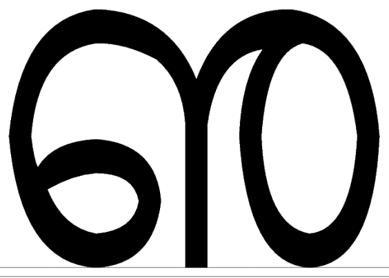
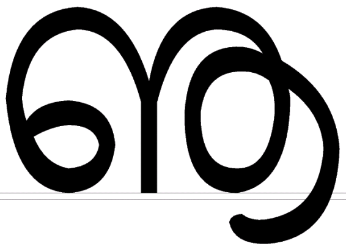

An Input Method for Malayalam
(This document is still in _DRAFT_ state)
This input is based on the Malayalam Inscript keyboard layout.
and Malayalam unicode character set.
This is the standared keyboard layout proposed by Kerala government.
This layout will be default in the GNU/Linux with Malayalam support.
Though now it requires X Window System and best support is available in GNOME.
Inputting Malaylam numerals and other old characters are described below.
First of all download the following files :
Inscript Keyboard layout is available here.
Add the font to your personal font directory (you need not be a
superuser)
A detailed description for installing font is available here.
For the time being just do like this :
bash$ cp nonstdml.ttf $HOME/personal-fonts/
(If the directory is not existing just create it)
Now, add an entry to $HOME/personal-fonts/fonts.dir like :
nonstdml.ttf -misc-NonStdMl-medium-r-normal--0-0-0-0-p-0-iso10646-1
(this is the entry for the font available here)
A sample fonts.dir file is here.
To add this font directory to X font path :
bash$ cd $HOME/personal-fonts
bash$ xset fp+ `pwd`
bash$ xset fp rehash
Now copy the XKB file to /usr/X11R6/lib/X11/xkb/symbols/ (login as root)
bash# cp ml /usr/X11R6/lib/X11/xkb/symbols/
Now, compile Malayalam locale (login as root)
Copy the locale to /usr/share/i18n/locales/
bash# cp ml_IN /usr/share/i18n/locales/
bash# localedef -i ml_IN -f UTF-8 /usr/share/locale/ml_IN.UTF-8/
Then, copy the Compose file to
/usr/X11R6/lib/X11/locale/ml_IN.UTF-8 /
bash# cp Compose /usr/X11R6/lib/X11/locale/ml_IN.UTF-8/
( If directory not existing, just create it)
Open the file /usr/X11R6/lib/X11/locale/compose.dir
and add these two entries at appropriate positions :
ml_IN.UTF-8/Compose ml_IN.UTF-8
ml_IN.UTF-8/Compose: ml_IN.UTF-8
(Be carefull, the second line has a colon in between)
A sample compose.dir file is here.
Before that change the locale :
bash$ export LC_ALL=ml_IN.UTF-8
(Add this entry to $HOME/.bashrc for conveniance)
Run the shell script to select the keyboard layout.
bash$ ./ml_setkb basic
(option basic is required, other option is 'mlplusnum' to include
malayalm numerals in the shift locations of indo-arabic numerals)
Inputting Malayalam
To input someting select X Input Method (right click in
GEdit)press both shift, now you are swithed to Malayalam mode
now start typing.
To input any "Koottaksharas" press the consonant (vyanchanam)
then
visarga (chandrakkala) and again the consonant. If you are
inputing in correct order proper rendering will occur.
Inputting Malayalm old charcters
Suppose you want to input Malayalam vocalic LL
just do like this :
bash$ xmodmap -e "keycode 33 = U0D0C"
Keycode 33 is 'w' so by pressing 'w' you will get
the desired unicode value. Unicode values of old character are given below :

U0D0C
U0D60

U0D61
Note : Sorting order for these characters are not included
Author
Baiju M
Bugs
Please report any bug at baiju@freeshell.org
Thu Sep 5 00:19:47 IST 2002
{kind=link}